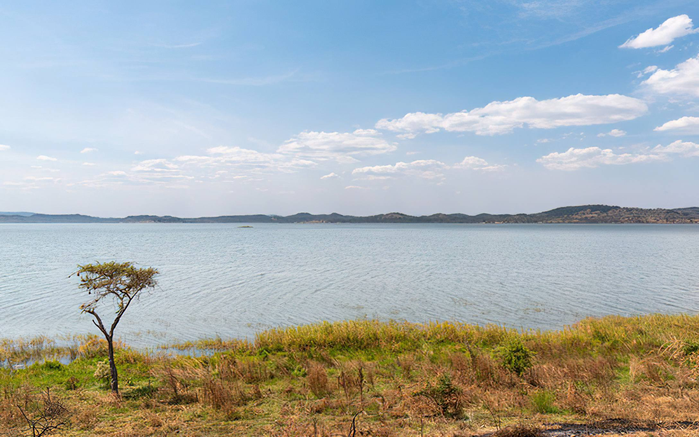
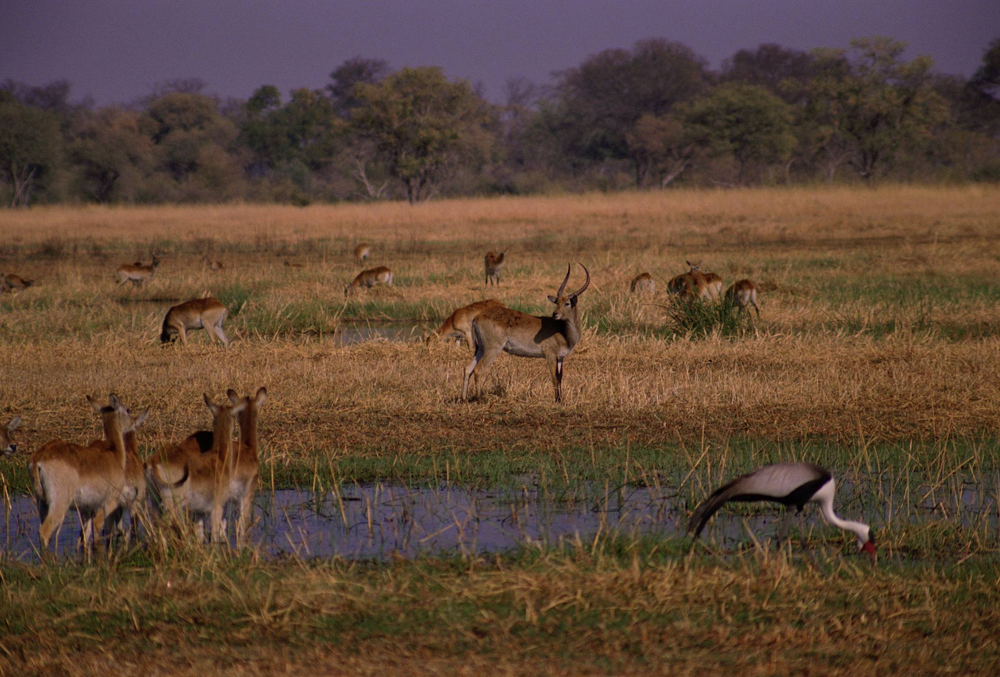
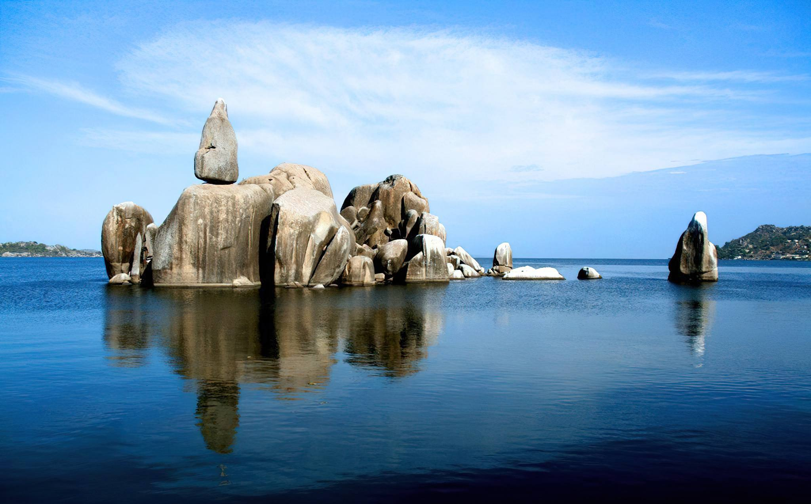
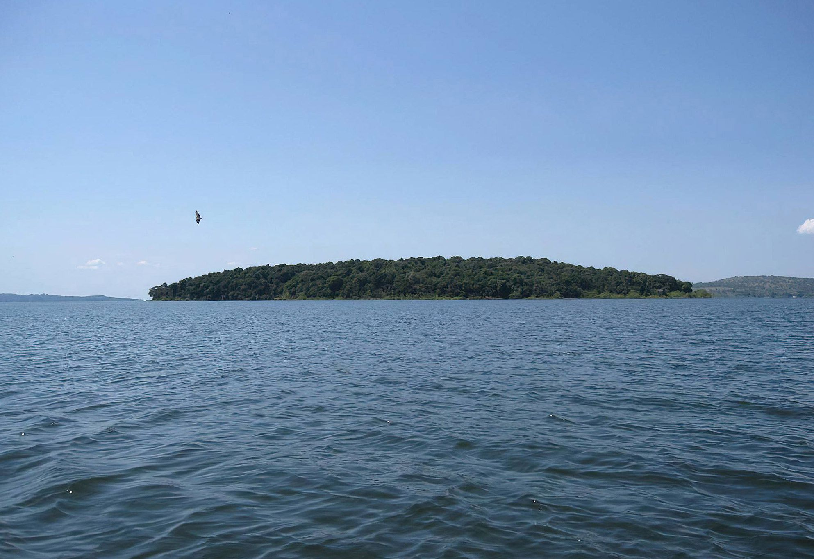
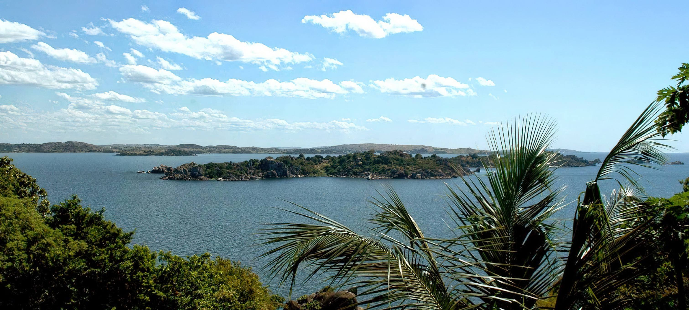

Tanzania's remotest frontier on Lake Tanganyika - Katavi's vast floodplains, Mahale's chimpanzees and Gombe's forest trails.
Destinations in this Circuit

Burigi-Chato National Park
Stretching from Lake Victoria in the East to the Rwandan boundary in the West,

Gombe National Park
Jane Goodall's chimpanzee research site - intimate forest treks on Lake Tanganyika.

Ibanda-Kyerwa National Park
The unseen treasure in the Western corner of the country, the paradise with scenic beauty of rolling hills, valleys,

Katavi National Park
Tanzania's most isolated park - hippo pools, buffalo herds and raw wilderness.

Lake Tanganyika
Comparatively narrow, varying in width from 10 to 45 miles (16 to 72 km),

Lake Victoria
An irregular quadrilateral in shape, its shores, save on the west, are deeply indented.
Mahale Mountains National Park
Chimpanzee trekking on crystal Lake Tanganyika - barefoot luxury and forest trails.

Rubondo Island National Park
The habitat of Rubondo Island is mixed evergreen and semi-deciduous forest, which covers about 80% of the island’s…

Saanane Island National Park
In 1964, Saanane was the first zoo in Tanzania. Later in 1991, it was recognized as a game reserve and then in 2013,

Ukerewe Island
Ukerewe Island is situated 45 km (25 nautical miles) north of Mwanza to which it is linked by ferry,
Safari Packages

Day Trip to Gombe National Park
From $638 / person
This chimpanzee day tour to Gombe Stream National Park is sometimes known as the weekend break is ideal for travelers with limited time who want to experience the chimpanzee trekki
View Itinerary6 Days Katavi Wilderness Safari
From $3,650 / person
Remote western Tanzania - enormous hippo pods, lion on the floodplains and exclusive camps in one of Africa's least-visited parks.
View Itinerary
Western Tanzania Primates Safari
From $3,650 / person
Chimpanzee trekking in Gombe and Mahale on Lake Tanganyika - Jane Goodall's legacy and barefoot forest luxury.
View Itinerary
2 Days Safari to Katavi National Park
Price on request
This 2 Days Katavi National Park Safari will take you to the far west of Tanzania in Tanzania’s lesser-known Katavi National Park which is extremely remote and an untouched wildern
View Itinerary
3 Days Safari to Katavi National Park
Price on request
This 3 Days Katavi Game Viewing Adventure Safari will give you the most incredible encounters with a game in this remote untouched and amazing wilderness while undertaking game dri
View Itinerary
3 Days Safari to Mahale National Park
Price on request
Mahale Mountains National Park is famous for its large chimpanzee population is located in western Tanzania on the dramatic shores of Lake Tanganyika. With forested slopes, the par
View Itinerary
4 Days Safari to Mahale National Park
Price on request
Mahale Mountains National Park is famous for its large chimpanzee population is located in western Tanzania on the dramatic shores of Lake Tanganyika. With forested slopes, the par
View Itinerary
5 - 6 Days Safari to Mahale National Park
Price on request
Mahale Mountains National Park is famous for its large chimpanzee population is located in western Tanzania on the dramatic shores of Lake Tanganyika. With forested slopes, the par
View ItineraryReady to explore the Western Circuit?
Request a Quote